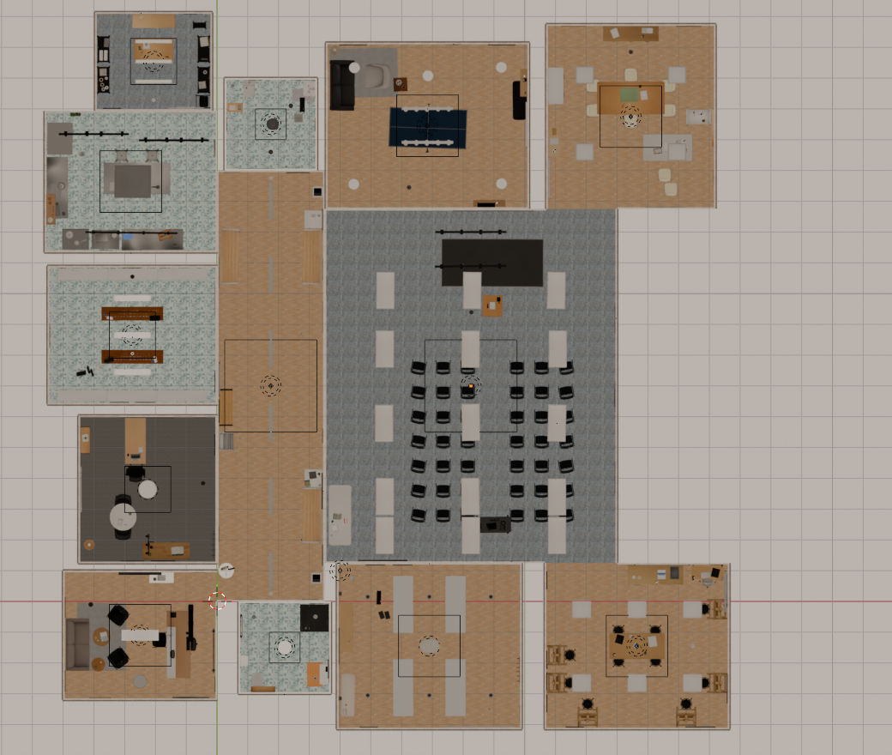

Spatial Intelligence · Deeptech AI
A deeptech AI startup building AI that understands the structural and content of physical space — enabling machines to reason, build and operate in 3D. Unlocking new frontiers across gaming, architecture, and robotics.
01 · Product — SPINTEL
A product suite for generating production-ready 3D environments from natural language descriptions.
Describe a building. Get a fully furnished, physics-valid scene — floor plan, furniture, wall fixtures, ceiling fixtures, small objects — ready for game engines, simulators, and renders.
Open Spintel
A 13-room multi-functional building, fully furnished from a single text prompt. Floors, walls, fixtures, and props all generated by the Spintel pipeline.
02 · Applied AI Research — SPATIAL CONTEXT PROTOCOL
Live agent transcript. SCP exposes a building as a compact, LLM-interpretable spatial model — lightweight enough to run on modest hardware.
An open protocol for AI agents to understand the physical world.
SCP enables LLMs to navigate buildings, identify locations, and control their environment in real time. Any space — generated, scanned, or hand-modelled — becomes a queryable, actuatable graph the agent can reason over.
Read the spec03 · Fundamental AI Research — OBJECT REPRESENTATION LEARNING
Learning structured, holistic object representations from object detection.
World modelling requires object queries that capture what an object is, where it sits, what it canonically looks like, and how it relates to everything else in the scene — substantially richer than detection training alone.
Compositional object queries decomposes a detected object into four complementary channels — rich substrates for object-centric world modelling with true object and spatial reasoning.
— Get in touch
We're a small deeptech team. If you're building agents, simulators, or pipelines that need real spatial understanding — we'd like to hear from you.